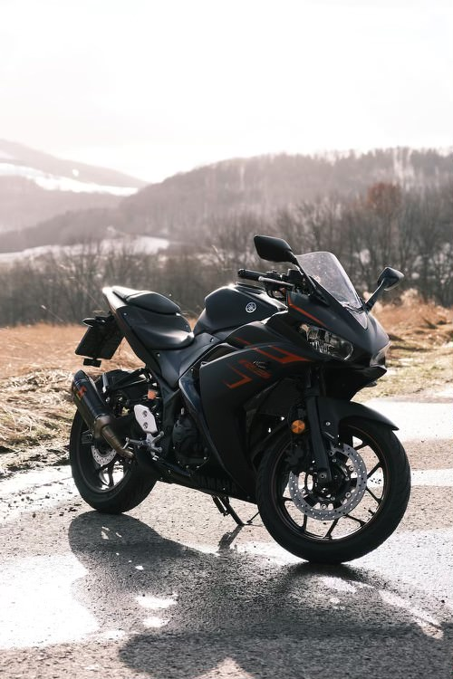

I am a student in the Software Engineering Technology program at Centennial College.
I also have a diploma in Cybersecurity and Computer Science from Harvard University.
We are supposed to drink lots of H2O to stay hydrated.
My preferred brand of mobile device is iPhone®
One of my favourite quotes is:
Success is not final, failure is not fatal - it is the courage to continue that counts.
"~~~Winston Churchill~~~"
I was born in Montreal, Quebec and then moved to Toronto when I was very little.
My family loves to travel so we moved to Saskatchewan and then after a few years Manitoba,
and then we came back to Toronto. I have seen some beautiful places and have explored a lot.

Some of my favourite things to do are:
- Video games
- Movies
- Travelling
- Riding my motorcycle
- Playing basketball
- Spending time with family
My priorities in the day are:
- Shower
- Breakfast
- College lecture
- Play with my son
FAQ:
- Student Number:
- 301396103